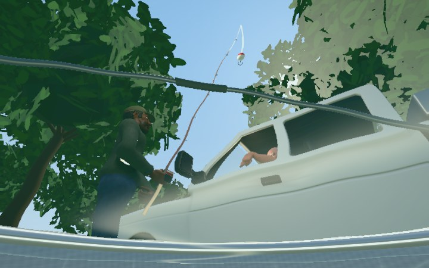

FISH POVUNDERWATER
WASD / left pad to swim · Drag to look
SWIM
SHOWCASE
FISH POV
You're already caught.

Loading…
WASD or the left pad to swim. Drag to look.
Hold Space / SURFACE to rise. Tap SPLASH to jump.
STATE PROPERTY · FISH POV
Just floating.
FISH POV · THE END